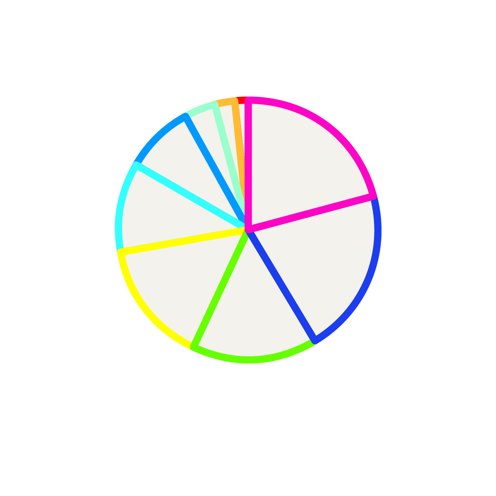

Genres

Kristen listened 6 genres this week.
Rap and Hip-Hop were the most listened to at 51.9%, followed by jazz, 15%; pop, 11.9%;
R&B, 10.6%; rock, 5.6%; and indie, 5%.
Artists
Kristen listened to 58 artists this week. The top three most-listened-to were Drake, Lil Wayne, and Erroll Garner.